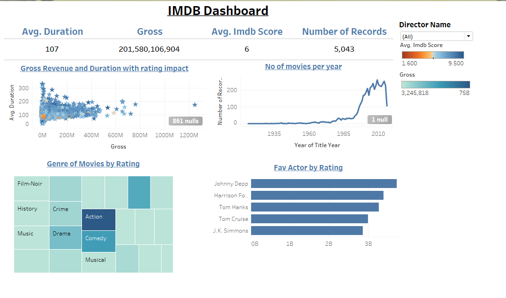
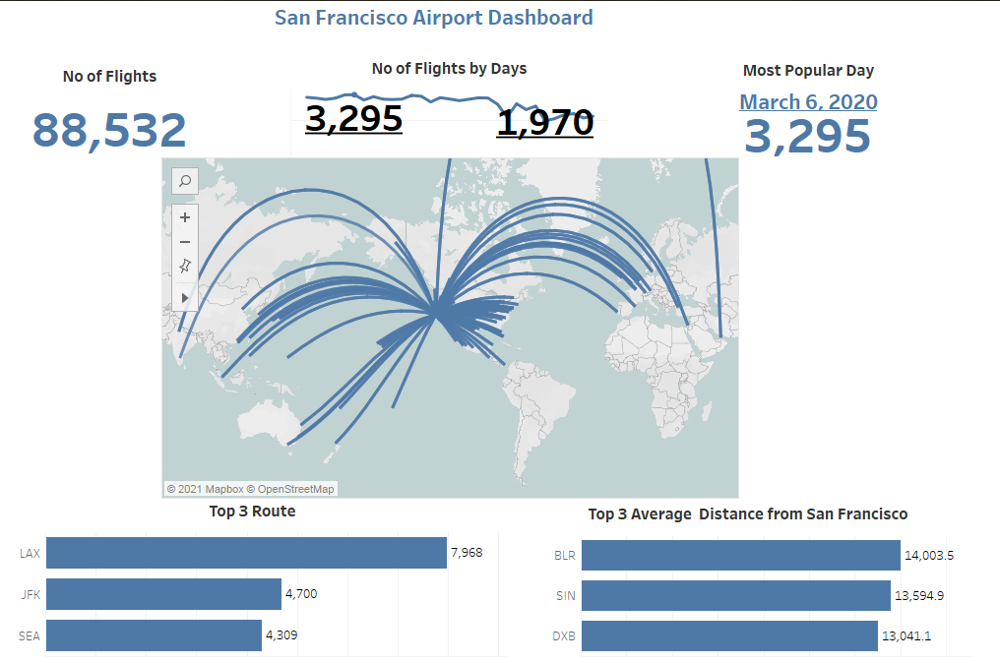

IMDB Dashboard in Tableau

In this project, I took data of IMDB ratings from 1935 to 2016 to find and analyse KPIs. KPIs includes Average Duration of movies, Gross, Average IMDB Score, and No. of movies. Furthermore, I analysed Gross Revenue and Duration with Rating impact, No. of movies per year, Genres of movies by Rating, and Favourite actors by Rating and Gross. It is simple and short dashboard with 4 charts. Also, I connected all the charts with a filter of "Director Name" that helps to find the record of any particular director.
Human Resource Dashboard in Tableau

This project basically throws light on Attrition and its relation with various other factors, such as last promotion, working span, relation with manager, Working time in one role, etc. KPIs for this analysis were Average Age, Attrition Count, Median Monthly Income, Avg Total Working Years, and Avg Years at Company. Further, I tried to visualized the relations, The first chart shows Attrition with respect to Years since last promotion and Years in present company, Second chart shows which department have highest rate of attrition, Third chart shows Attrition with respect to relation with current manager and the last chart shows Attrition count and Number of companies worked in.
San Francisco Airport Dashboard in Tableau

In this project, I visualized the data of San Francisco Airport of March,2020. This includes No. of Flights, No. of Flights by Days, The Most Popular Day. Then I have attached the map that shows the route map of all the flights from San Francisco Airport with Top 3 routes and Top 3 Average Distance From San Francisco Airport. The analysis came to conclusion that 88,532 flights flew in March, Most flights in single day is 3,295 on March 6,2020.
Sales Report Static Dashboard in Tableau

In this project, I analysed the sales report of a company with the data of four years i.e. from 2009 to 2012. It includes line chart, donut chart and bar graphs. This dashboard inlcudes KPIs, Order Count, Sales by Segment and Categories, Profit, Proit % by Categories, Order % by Categories and Ship Mode and Customer Profit vs Sales. According to the data, in 2009 order count was at its peak, Corporate segment contribute highest in sales, 2.510 days is the average time to deliver, 5.4% is the average discount and 27.49 is the average order quantity.
Sales Report Interactive Dashboard in Tableau

In this project, I analysed the sales report of a company with the data of three years i.e. from 2018 to 2020. It is an interactive dashboard that includes line chart and bar graphs. This dashboard inlcudes Total Revenue, Sales Qty., Revenue by Market, Sales by Market, Revenue by Year and Top 5 customers. According to the data, Delhi NCR is the biggest market for the company in terms of both, Sales and Revenue, Electicalsara Store is the top customer of the company by contributing highest revenue and the revenue of the company is highest in 2018 January.